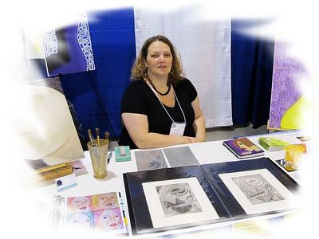
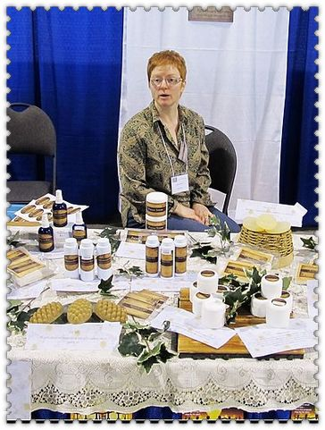
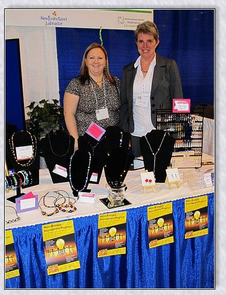
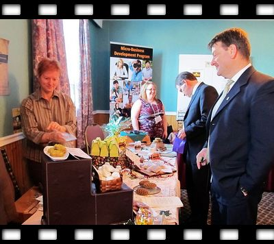
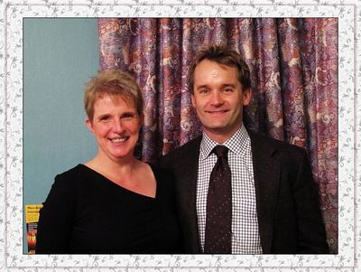

Business Owner: Wendy Power
Description: Specializing in Custom Cake Design and Gourmet Cupcakes, beautifully decorated and uniquely designed with flavours to suit all taste buds! Catering to weddings, birthdays, showers, anniversaries, office parties, bachelorette parties, graduations and corporate functions.
Contact: 489 0029, Grand Falls-Windsor
Email: ilovecakenl@gmail.com
Facebook page-I Love Cake
Business Owner: Michelle Wall
Description: Since 2009 Off the Wall Jewellery has been providing quality jewelry to individuals who want to express their unique personality and tastes.
Contact: 682 5191, St. John’s
Email: michellewall6@hotmail.com

Business Owner: Michael Pardy
Description: Capturing life’s most special moments with creativity and passion. Services include wedding day photos, family and children's photos, graduation portraits, family pet shoots, baby portraits, special events, sports and more.
Contact: 765 0829, St. John’s
Website: mpphotonl.ca
Email: mpphotonl@live.ca
Business Owner: Jing Xiao
Description: Websites Garage is a marketing and information technology service firm. We provide consulting services to Newfoundland and Labrador’s for-profit and non-profit organizations. We have Content Management Systems, Survey Systems, Database Management Systems, Search Engine Solutions and much more.
Contact: http://websitesgarage.com

Business Owner: Sean Malthouse
Description: Boathouse Graphics specializes in digital advertising which is the fastest growing marketing sector today. Digital advertising is a very effective and inexpensive way for businesses to be seen. Ads start for as little as eight cents per view.
Contact: 293 4989, Bishop Falls
Email: sean@boathousegraphics.com
Business Owner: Neil Bailey
Description: Interior and exterior renovations, patios, fences, doors, windows. Free estimates. Neil resides in Grand Falls-Windsor with his wife and daughter.
Contact: 486 9488, Grand Falls-Windsor
Email: neilbaileyis@gmail.com
Business Owner: Kathy Buckley
Description: A variety of jewellery including European beads and sterling silver necklaces, bracelets, rings and watches. Elegant fashions (regular and plus size) including bras, lingerie, purses and boots. Also taking bookings for home parties.
Contact: 293 4470 Grand Falls-Windsor
Email: Katie@hotmail.com
Facebook page-Katie’s Kollections

Business Owner: Elmo Hewlett
Description: Specializing in wood turning, products include pens, jewellery, bottle openers, letter openers,stoppers, shaving equipment as well as a variety of other products using local wood and moose antler.
Contact: 489 0261, Grand Falls-Windsor
Email: elmo_work@hotmail.com
Business Owner: Rosanne Hicks
Description: Originally from Corner Brook, this former theatre professional decided to study herbalism. Rosanne currently resides in Millertown with her husband David and two children. She is very excited to pursue her passion of bringing natural alternative products to consumers who really want to have a choice. Believing that clean is natural and need be nothing else, additives such as perfumes, dyes and preservative chemicals are unnecessary and not included.
Conact: 852 5521, Millertown
Email: apothecarygarden@hotmail.ca
Business Owner: Tristin Norenberg-Goodmanson
Description: Music To Imagine the Alternative. Outport Record s and Café will provide a variety of alternative/international music and merchandise. The retail space (and cultural milieu) will be located in St. John's, Newfoundland (Opening T.B.A.).
Contact: St. John’s
Email: clashcontrast@live.com

Business Owner: Teresa Greene
Teresa’s love of rug hooking led her to ‘Hook on the Go’ Her designs capture places and experiences of her life. Her work is mainly with wool yarn but she experiments with alternate materials such as birch bark and dog hair. A Hook on the Go kit includes a small frame, burlap with the design drawn, hook, and yarn to complete the project and instructions.
Contact: 852 4256, Millertown
Email: teresagreenehokedart@gmail.com